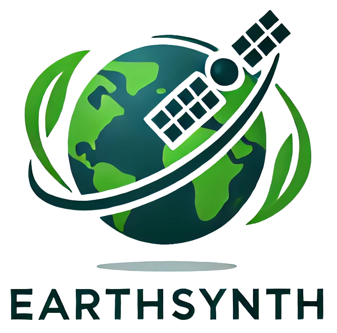

 EarthSynth: Generating Informative Earth Observation with Diffusion Models
ArXiv 2025
1Tsinghua University, 2University of Sydney, 3INSAIT, Sofia University "St. Kliment Ohridski", 4University of Chinese Academy of Sciences, 5Wuhan University, 6University of Science and Technology of China , 7Shanghai Jiao Tong University